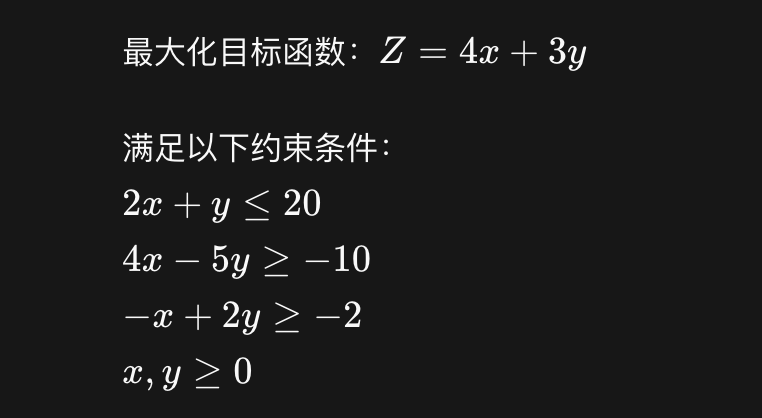
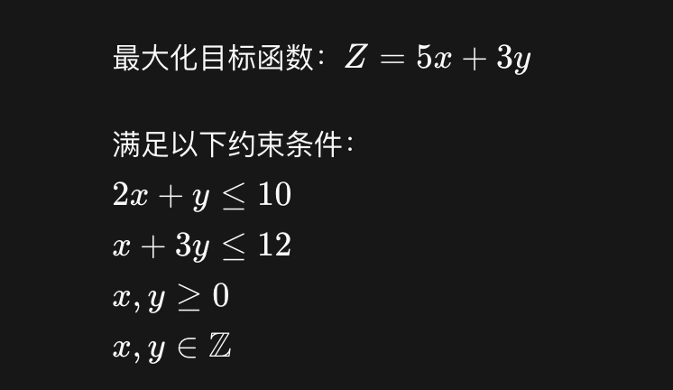
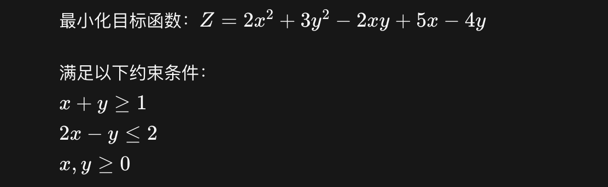
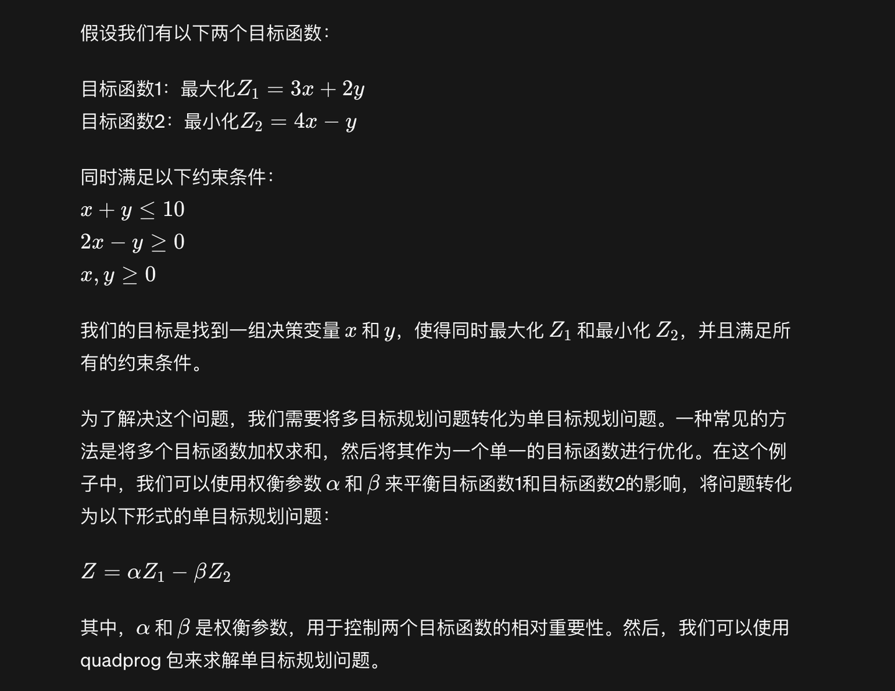

Chapter 5 prescriptive analytics
5.1 工具
- lpSolve
- ROI
- lpSolveAPI
- glpk
- QuadProg
5.1.1 1. lpSolve 线性规划

# install.packages("lpSolve")
# 加载lpSolve包
library(lpSolve)
# 定义目标函数的系数向量
obj <- c(4, 3)
# 定义约束矩阵和约束符号
mat <- matrix(c(2, 1, 4, -5, -1, 2), nrow = 3, byrow = TRUE)
dir <- c("<=", ">=", ">=")
# 定义约束右侧的值
rhs <- c(20, -10, -2)
# 求解线性规划问题
result <- lp(direction = "max", objective.in = obj, const.mat = mat, const.dir = dir, const.rhs = rhs)
# 打印结果
print(result)## Success: the objective function is 47.14286上述代码首先加载了lpSolve包，然后定义了目标函数的系数向量（obj）、约束矩阵（mat）、约束符号（dir）和约束右侧的值（rhs）。接下来，我们使用lp函数来求解线性规划问题，其中direction参数指定了最大化目标函数，objective.in参数指定了目标函数的系数向量，const.mat参数指定了约束矩阵，const.dir参数指定了约束符号，const.rhs参数指定了约束右侧的值
5.1.2 整数规划

# 加载lpSolve包
library(lpSolve)
# 定义目标函数的系数向量
obj <- c(5, 3)
# 定义约束矩阵和约束右侧的值
mat <- matrix(c(2, 1, 1, 3), nrow = 2, byrow = TRUE)
rhs <- c(10, 12)
# 定义决策变量的类型（整数）
types <- c("I", "I")
# 求解整数规划问题
result <- lp(direction = "max", objective.in = obj, const.mat = mat, const.dir = "<=", const.rhs = rhs, all.int = TRUE)
# 打印结果
print(result)## Success: the objective function is 26在这个例子中，我们首先加载了lpSolve包，然后定义了目标函数的系数向量（obj）、约束矩阵（mat）、约束右侧的值（rhs）和决策变量的类型（types，“I”表示整数）。接下来，我们使用lp函数求解了整数规划问题，其中direction参数指定了最大化目标函数，objective.in参数指定了目标函数的系数向量，const.mat参数指定了约束矩阵，const.dir参数指定了约束符号（这里用”<=“表示小于等于），const.rhs参数指定了约束右侧的值，all.int参数指定了所有决策变量都是整数。
5.1.3 二次规划

library(quadprog)
# 定义目标函数的二次项系数矩阵
Dmat <- matrix(c(4, -2, -2, 6), nrow = 2)
# 定义目标函数的一次项系数向量
dvec <- c(5, -4)
# 定义约束矩阵和约束右侧的值
Amat <- matrix(c(-1, -1, 2, -1), nrow = 2)
bvec <- c(-1, 2)
# 求解二次规划问题
result <- solve.QP(Dmat, dvec, Amat, bvec)
# 打印结果
print(result$solution)## [1] 1.1 -0.35.2 多目标规划

# 加载 quadprog 包
alpha <- beta <- 0.5
library(quadprog)
# 定义目标函数的系数向量
dvec <- c(3 - 4 * alpha, 2 + beta)
# 定义约束矩阵和约束右侧的值
Amat <- matrix(c(1, 1, 2, -1), nrow = 2)
bvec <- c(10, 0)
# 求解单目标规划问题
result <- solve.QP(Dmat, dvec, Amat, bvec)
# 打印结果
print(result$solution)## [1] 5.607143 4.392857